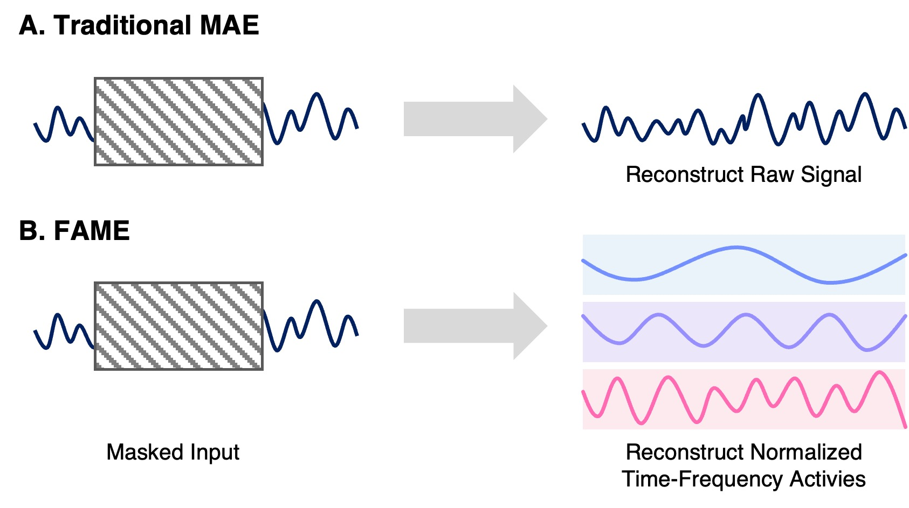

FAME: Frequency-Balanced EEG Foundation Model
Investigated the persistent low-frequency bias of EEG foundation models and proposed a frequency-balanced masked autoencoding framework. The 1B-parameter model achieved state-of-the-art performance on 24 of 41 downstream EEG tasks.